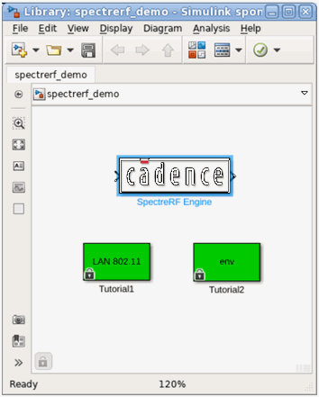
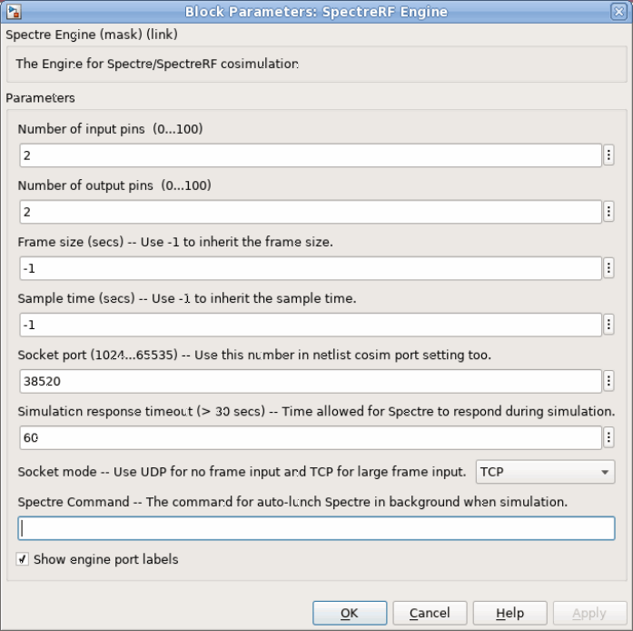
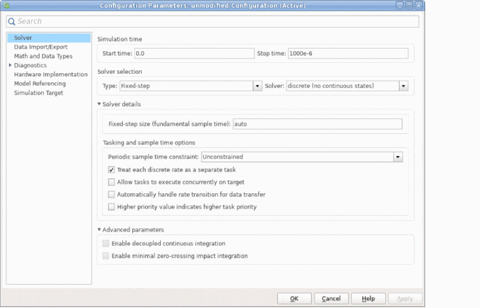
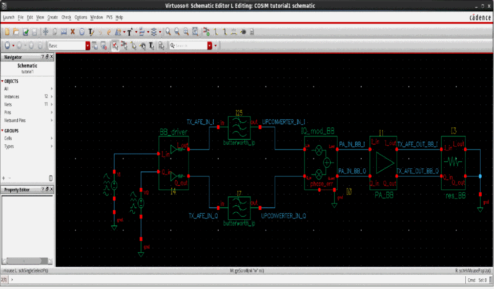
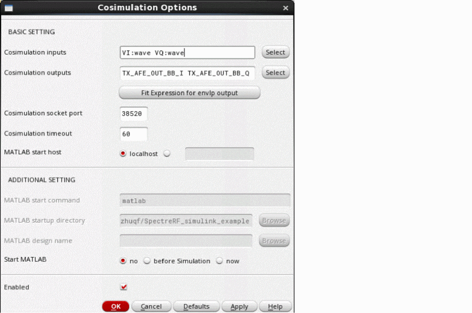
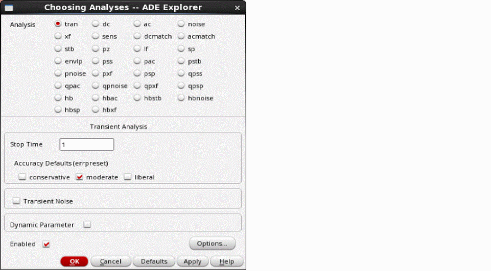
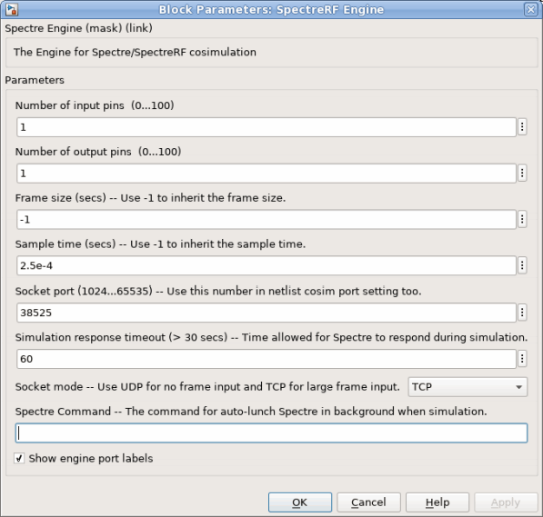
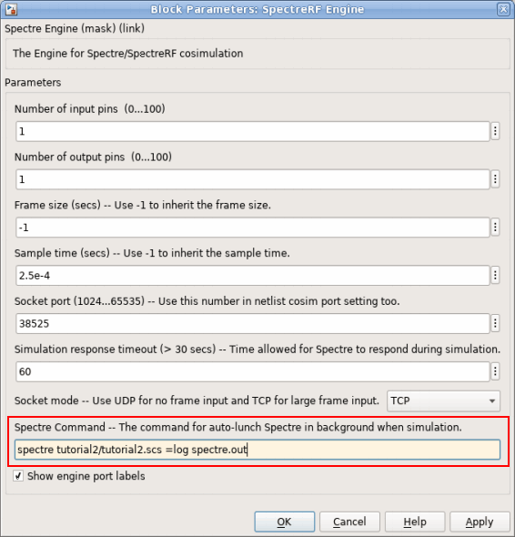

9
Cosimulation with MATLAB® and Simulink®
This chapter describes how to set up and use a cosimulation link between the MATLAB® and Simulink® system-level simulation environment and Spectre® circuit simulator RF analysis (SpectreRF). The sections in this chapter are:
- Introduction to Cosimulation with MATLAB
- Software Requirements
- Setting Up and Running a Cosimulation
- Connecting the Coupler Block Into the System-Level Simulink Schematic
- Determining How You Want to Start and Run the Cosimulation
- Generating a Netlist for the Lower-Level Block
- Running the Cosimulation
- MATLAB Support Matrix
Introduction to Cosimulation with MATLAB
Cosimulation combines the best of system-level simulation with lower-level analog and RF simulation. Simulink provides large libraries of DSP algorithms for generating complicated signals and post processing while SpectreRF supports transient and envelope analysis of common RF and communication circuits such as mixers, oscillators, sample and holds, and switched capacitor filters at both the transistor and behavioral levels.
- To detect concept errors early
- To detect design flaws before tape-out
- To quickly correct issues and re-simulate
The system-level design in Simulink serves as a golden reference. System designers can use the Simulink system-level design as a testbench for implementing and simulating the design. Unfortunately, when system-level designs are simulated by themselves, the effects originating from subsystems are often not considered. With cosimulation, system designers can create low-level models of critical analog blocks and use these models one at a time to analyze the performance impact of individual blocks on the system-level simulation.
Software Requirements
Cadence recommends that you use Cadence software version MMSIM 7.1 or later.
Setting Up and Running a Cosimulation
To prepare for and run a cosimulation,
- Connect the coupler block into the system-level Simulink schematic.
- Determine how you want to start and run the cosimulation.
- Generate a netlist for the lower-level block that reflects how you want to start and run the cosimulation.
- Run the cosimulation.
These steps are described in greater detail in the following sections.
Before you continue, however, be sure that the programs are ready to run.
-
Add the SpectreRF and MATLAB/Simulink engine install paths to the
MATLABPATHenvironment variable.
You can automate this step by adding the appropriate command to your.cshrcfile. For example, if you are using a C shell, you can add the following command:setenv MATLABPATH `cds_root spectre`/tools/spectre/simulink:${MATLABPATH}
Connecting the Coupler Block Into the System-Level Simulink Schematic
To prepare the Simulink part of the design for cosimulation,
-
Start MATLAB, by typing
matlab &
The Simulink library opens.
This library contains the coupler module (distinguished by the Cadence logo and labeledSpectreRF Engine). You can insert the coupler module in any Simulink design by dragging and dropping it from this library. - Open your testbench or high-level design.
-
Drag and drop the
SpectreRF Enginecoupler block into the testbench and place it in the design. -
Connect the
SpectreRF Engineblock into the design.
To make a signal connection, move the mouse pointer over the module pin. The pointer changes to a cross. Press the left mouse button, move the cursor to the destination pin and release the button. -
Double-click the
SpectreRF Engineblock.
This opens the Block Parameters: SpectreRF Engine form where you can edit the coupler block’s parameter values.
The fields have the following meanings:
- Set the number of input pins and output pins as well as any other parameters you need to set.
-
Note the Spectre command field but do not change the value now.
Depending on how you choose to run the cosimulation, you might need to return to this field and type in aspectrecommand. -
Click OK.
The form closes and theSpectreRF Engineblock is updated with the correct number of pins. -
(Optional) Make other necessary changes in the Simulink testbench window.
For example,-
Choose Format – Port/Signal Displays – Signal Dimensions.
This switches the signal dimension display on so you can see details of framed signals. -
Choose View – Simulink library to display the library browser. Double-click Math Operations.
The library appears. Here you can select Simulink converters, such as aComplex to Real-Imagblock. Drag and drop blocks into the schematic and connect them as necessary.
Double-click any placed blocks and set appropriate values. -
Choose Format – Port/Signal Displays – Signal Dimensions.
-
Choose Simulation – Configuration Parameters.
The Configuration Parameters form opens.
 - In the Stop time field, set the stop time.
-
Click OK.
The Configuration Parameters form closes. - Save the modified design by choosing file – save as.
This completes the necessary modifications to the Simulink testbench.
Determining How You Want to Start and Run the Cosimulation
There are three ways to run a cosimulation, after all the setup is finished.
-
You can start the two applications (SpectreRF and MATLAB) separately.
This method is appropriate if you need to be able to modify both the system-level Simulink design and the analog circuit. -
You can start ADE Explorer and arrange to have MATLAB start automatically.
This method is appropriate if you are an analog design who needs to validate a circuit with system-level design input and output. -
You can start MATLAB and arrange to have SpectreRF start automatically.
This method is appropriate if you are a system-level designer, because, after set up, you can use the SpectreRF Engine just like another block in Simulink.
The setup differs for each of these approaches so it is useful to decide which is most appropriate for your design before continuing.
Generating a Netlist for the Lower-Level Block
The previous section describes how to insert a coupler block into the system-level design. That defines one end of the connection but you must still establish a connection with the lower-level analog block that is simulated by SpectreRF. To do that, you insert a cosim statement into the netlist, either by hand or by using the ADE environment.
Preparing the Netlist When Using ADE Explorer
This section describes how to prepare a netlist for cosimulation using the Analog Design Environment (ADE).
-
Start the virtuoso tool.
virtuoso &
The recommended version ofvirtuosois release IC6.1.4 or later. -
Open the schematic view of the cell.
For example,
 -
Open the Virtuoso Analog Design Environment from the schematic editor by choosing Launch – ADE Explorer.
The Launch ADE Explorer form appears. - In this form, select Open Existing View and click OK.
-
Choose Setup – Matlab/Simulink – Setting.
The Cosimulation Options form appears. -
In the Cosimulation Options form, click the Select button located beside Cosimulation inputs. Switch to the schematic viewer, where you see the following information below the schematic.
Select source instance as cosimulation inputs. Press Esc when done.
Select the sources (which are connected to the outputs from the Simulink level of the design), then press the Esc key. -
In the Cosimulation Options form, click the Select button beside Cosimulation outputs. Switch to the schematic viewer, where you see the following information below the schematic.
Select Net/Terminal as cosimulation outputs. Press Esc when done
Select the outputs (which are connected to the inputs at the Simulink level of the design), then press the Esc key.
The Cosimulation Options form looks something like this:
 -
Ensure that the value of Cosimulation socket port is the same as the port value of the
SpectreRF Engineblock defined in “Connecting the Coupler Block Into the System-Level Simulink Schematic”. - In the Cosimulation Options form, select Enabled.
-
Examine the possible values for the Start MATLAB field.
-
Continue the process of preparing the netlist according to how you want to start the applications that run the cosimulation.
To use this starting method... Follow the guidance in this section... Start the two applications (SpectreRF and MATLAB) separately.
Start MATLAB and arrange to have SpectreRF start automatically.
“Preparing to Start MATLAB Manually and SpectreRF Automatically”
Preparing to Start the Two Applications Separately
- Set the start MATLAB value to no.
- Click OK to close the Cosimulation Options form.
-
Use the Choosing Analyses form to set up the analysis.
The Stop Time can be any value. The SpectreRF simulator synchronizes the stop time with Simulink.
The Choosing Analyses window looks something like this:
 -
Create a netlist and make sure the Simulink
cosimstatement appears in it.
Preparing to Start ADE Manually and MATLAB Automatically
- Set the value of the Start MATLAB field to before Simulation in the Cosimulation Options form.
-
Type the name of the MATLAB design into the MATLAB design name field.
Such designs have an extension of.mdl. For example,env_d.mdl. The MATLAB design must be in a location that is included in theMATLABPATHenvironment variable. -
Set the value of the Start MATLAB field to now.
A new MATLAB application starts and helps you open the Simulink design. -
Double-click the
SpectreRF Enginein the design and set the parameters.- Set the Sample time. The Sample time can be set to -1, if you are uncertain about the appropriate time to use.
- Set Socket Port to the value you set in the Cosimulation Options form.
-
Leave the Spectre Command field empty.
This field is used when you wish to start SpectreRF automatically after starting MATLAB manually. - Click OK to close the SpectreRF Engine form.
- In the Cosimulation Options form, set Start MATLAB to before Simulation.
- Click OK to close the Cosimulation Options form.
- Use the Choosing Analyses form to set up the analysis.
- Choose File - Save to save the design in MATLAB. Then exit from the MATLAB that was opened by ADE Explorer.
Preparing to Start MATLAB Manually and SpectreRF Automatically
-
Set the value of the Start MATLAB field to now.
A new MATLAB application starts and helps you open the Simulink design. -
Double-click the
SpectreRF Enginein the design and set the parameters.- Set the Sample time. The Sample time can be set to -1, if you are uncertain about the appropriate time to use.
- Set Socket Port to the value you set in the Cosimulation Options form.
-
Type a command similar to the following into the Spectre Command field.
spectre
The Block Parameters: SpectreRF Engine window looks something like this:netlist_file=log spectre.out - Click OK to close the Block Parameters: SpectreRF Engine form.
- In the Cosimulation Options form, set Start MATLAB to no.
- Click OK to close the Cosimulation Options form.
- Use the Choosing Analyses form to set up the analysis.
- Choose File - Save to save the design in MATLAB. Then exit from the MATLAB that was opened by ADE Explorer.
Preparing the Netlist Without Using a Graphical User Interface
The steps in this section are necessary only if SpectreRF needs to start MATLAB automatically. If you are using the “Start MATLAB and arrange to have SpectreRF start automatically” starting method, ensure that there is no cosim statement in the netlist.
-
Edit the netlist file.
For example,vi tutorial1/tutorial1.scs.
-
Add a
cosimstatement to the netlist.
For example,matlab cosim server="bj2lnx20" port=38525 inputs=["VI:wave" "VQ:wave"] outputs=[TX_AFE_OUT_BB_I TX_AFE_OUT_BB_Q]
The parameters for thecosimstatement are described below:
-
Close and save the netlist.
After the above steps, the netlist is ready for simulation.
Running the Cosimulation
With the coupler connected into the MATLAB design and with an appropriate netlist for the low-level design, you are ready to run the cosimulation. Note that these starting methods work only when the design is prepared as described earlier in this chapter.
Starting the Two Applications Separately
- Open the high-level design or testbench in the MATLAB design window.
-
In the MATLAB design window, choose Simulation – Start.
The MATLAB desktop issues the following message.block 'modified/SpectreRF Engine': (COSIM_OK) Waiting for incoming connection on port 38520, timeout: 60 sec ...
Then quickly do step 3. -
In ADE Explorer, choose Simulation – Netlist and Run or enter a spectre command at the command line. For example,
spectre tutorial1/tutorial1.scs
The cosimulation begins. The MATLAB desktop issues a message similar to the following when simulation ends.block 'modified/SpectreRF Engine': (COSIM_OK) Simulation finished
Starting SpectreRF Manually and MATLAB Automatically
To run the cosimulation by starting SpectreRF,
- If you are using ADE Explorer, open the low-level design in the ADE window.
- If you are using standalone SpectreRF,
Starting MATLAB Manually and SpectreRF Automatically
-
Start MATLAB.
matlab&
-
Choose Simulation – Start.
The MATLAB desktop issues a message similar to the following.block 'env_d/SpectreRF Engine': (COSIM_OK) Waiting for incoming connection on port 38525, timeout: 60 sec ...
block 'env_d/SpectreRF Engine': (COSIM_OK) Launch Spectre with commad 'spectre tutorial2.scs =log spectre.out'”
The cosimulation runs. - After the cosimulation finishes, review the MATLAB/Simulink output, close the MATLAB desktop, and exit from MATLAB.
-
Start MATLAB.
MATLAB Support Matrix
Table 9-1 MATLAB Toolbox
This matrix applies to SPECTRE19.1 base and subsequent ISR versions.
| SPECTRE | MATLAB Release | Supported Platform |
Table 9-2 MATLAB Cosimulation
This matrix applies to SPECTRE19.1 base and subsequent ISR versions
MATLAB versions older than MATLAB R2015a are not included in this matrix.
| SPECTRE | MATLAB Release | Supported Platform |
Return to top